Week 0 · The basics: spread, z-scores and the normal distribution
what you need to get started with inferential statistics
Towards morning the bat was still hanging there, looking at his slip of paper — 65 on the worry questionnaire — and the longer he looked, the bigger the number grew.
“Is that a lot?” he asked quietly, because the others were asleep.
The dormouse opened one eye.
“You’re not looking, you’re worrying, and worrying is going round in circles,” she said, and the eye closed again.
The bat looked at the slip once more, and then, for the first time that night, looked away from it.
The tree was hung with animals, and each of them had a slip like that.
What you learn this week
what kind of number you have: the level of measurement
the standard deviation in six steps, by hand and from memory, and what each step means
why a raw score tells you nothing, and a z-score does: how many times does the ruler fit? And back to the score
the normal distribution: a bell, and area is probability
the 68–95–99.7 rule and three anchors, for when you don’t have R
from z to a probability and back, with the rule, with the anchors, and exactly in R or in table A
from probability to percentage and back, without losing a zero
in R, as a check: sd(), scale(), pnorm() and qnorm()
Why a week 0
This week is all you need to get started: the standard deviation, the z-score, and the normal distribution where a z gets its place. If you don’t quite remember it, that is exactly what this page is for.
This is the book’s chapter zero, and by the end of this week you should be able to do it in your sleep. Two things above all: working out the standard deviation, just the order of the steps, and working out and understanding a z-score. Once you understand z, you have already half understood the t-values and χ² that come later.
That is why the steps are on a step card, always in the same words. You read it, you write it out from memory, and you practise it in short rounds with new numbers. At the end there is a self-test without a cheat sheet. Do each question yourself first and only then click the answer open: in the exam, nothing clicks open either.
In the exam you have no table and no R. By hand you work with a rule of thumb and three anchors, and a probability you can’t know off the top of your head is then given in the question. Here you also practise two ways to the same precise probability: with pnorm() in R, and with table A at the back of the Dutch edition, where the words are Dutch but the numbers need no translation. The two should come out the same. That way you check yourself, and you see what R calculates for you.
Level of measurement: what kind of number do you have?
Before you calculate anything: what kind of number is it, actually? The level of measurement of a variable tells you how seriously you may take its values. There are four levels, and each level adds something. That one thing is the magic word.
Four levels of measurement, and what each level adds
level
magic word
what the number can do
example
nominal
name tag
only difference: the same or different
your attachment style: secure, anxious or avoidant
ordinal
rank order
difference and an order, but the distances are not equal
how often you lie: never, sometimes, often or always
interval
distance
an order and equal distances
your score on a questionnaire about fear of failure
ratio
zero point
equal distances and a true zero: zero really is nothing
how often you said I’m fine this week when you weren’t
Why this matters: a mean and a standard deviation only make sense from interval upwards. Give the attachment styles a number (1, 2 and 3) and they are still name tags; an average attachment style of 1.8 does not exist. Everything this week calculates with distances: the standard deviation, the z-score and the normal distribution.
When you choose a test, in week 7 (Choosing a test, and an overview), interval and ratio go together. Then there are three kinds of outcome, in the same order: a category (nominal), a rank order (ordinal) or a number with fixed distances (interval or ratio).
NoteWhere the names come from, and a question with five boxes
Nominal comes from the Latin nomen: the name. It is just a name tag. Inter means between: with interval, the distance between two values is fixed. Ratio is proportion: only with a true zero is twice as much really twice as much.
One question with answers from strongly disagree to strongly agree is, strictly speaking, ordinal: the order is fixed, the distance is not. Add up a whole questionnaire of such questions and you treat that score as interval, as in the table above. People often calculate with a single question like that too, and that’s fine. But the moment you work out a mean or a standard deviation of it, you are assuming it behaves like interval or higher.
NoteQuick check — which level of measurement?
Which defence mechanism someone uses most: denial, rationalising or turning it into a joke.
Five people put in a row, from least to most jealous.
How long someone takes to respond to an accusation, in seconds.
A score on a questionnaire about loneliness.
CautionAnswer — which level of measurement?
Nominal: three names, with no order.
Ordinal: an order, but you don’t know whether the step from number 1 to number 2 is as big as the one from number 2 to number 3.
Ratio: zero seconds really is nothing, and twice as long really is twice as long.
Interval: a sum of many questions you treat as interval, like most questionnaire scores.
The standard deviation in six steps
A mean tells you where the middle is. It doesn’t tell you how far the scores lie around it. That is what the standard deviation is for.
In an exam you don’t get a hundred scores but five or so. Sometimes the calculation is already half done and you have to finish it. So make sure you know the steps.
For a week, five people keep track of how often they say I’m fine when someone asks how they are, while they are not really fine at all. Their scores are 7, 9, 9, 10 and 15.
Step 1 · Mean
Add up all the scores and divide by n. The mean is called (x-bar):
That is your best guess. If one of the five people walks in and you have to guess what they score, you call out 10.
Step 2 · Blue strokes
How far off were you? Subtract the mean from each score: score minus mean. Specific minus general, always in that order; then the minus or the plus takes care of itself. Each difference is a deviation, a miss. When I teach this, they are always blue strokes.
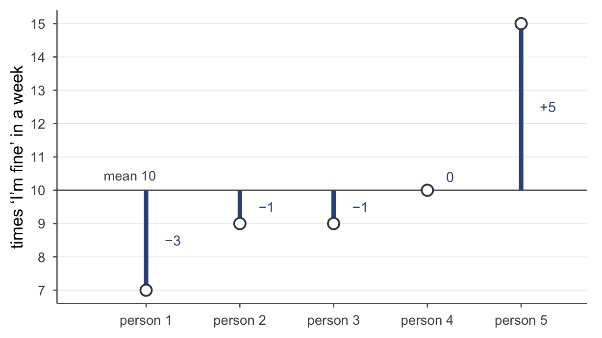
Figure 1: The blue strokes. Each stroke runs from the mean (10) to a score: −3, −1, −1 and +5, and for person 4 a 0. Above the mean plus, below it minus. Together 0.
Add up the strokes:
Always zero. The mean sits exactly where the strokes above and below cancel each other out. Handy as a check: if you don’t get zero, your mean is wrong. But as a measure of spread it’s useless: you would never miss. Those minuses have to go.
Step 3 · Squaring
Square each stroke. Squaring is literally making a square: a stroke squared is a little square, with the stroke as its side and the squared number as its area. And minus times minus is plus, so the minuses are gone.
Figure 2: Each blue stroke becomes a square. The stroke of −3 becomes a square of 9; the stroke of 0 becomes a square of 0: it counts, but you can’t see it. All the blue together is 36: that is what you add up in step 4.
Look at the big square: squared, the stroke of 5 counts for much more than the short ones.
WarningThe calculator trap
Type in −3² and your calculator gives −9: it squares first and then puts the minus back in front. You mean . Put brackets round it.
Step 4 · Adding up
Add up the squares:
That is the sum of squares: all the blue of the squares above, all the misses together. The further apart the scores lie, the bigger it gets.
Note the difference from step 2: the strokes always add up to 0, the squares only if everyone sits exactly on the mean. That is why you square first, then add up.
Step 5 · Dividing by n − 1
Divide the sum of squares by n − 1, here 5 − 1 = 4:
That is the variance, : the mean square. The little x says what this is the spread of: the scores x.
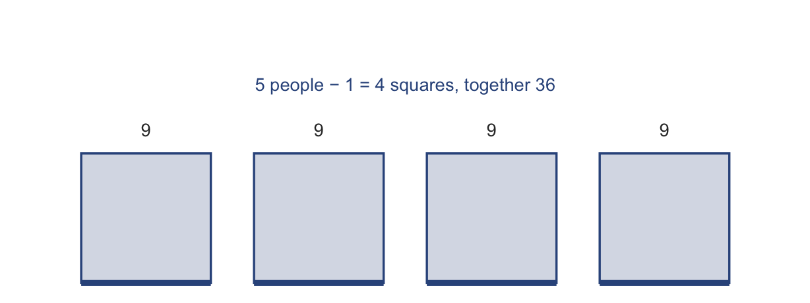
Figure 3: The same blue as in step 3 (36), shared out fairly over 5 − 1 = 4 equal squares: 9 each. That is the variance, the mean square. Four, because there are five people and the last one is stuck; not because you saw four squares in step 3 (the one of 0 counts too). On the same scale as the squares of step 3.
Above all, remember: n − 1.
Why by 4 and not by 5? Because the mean is already fixed. If the five walk in one at a time, then by the last one you can do a quick calculation and know exactly what that last person scores: they have no choice left, they are stuck. Try it: the mean is 10, so together they score . If you know the first four (7, 9, 9 and 10, together 35), the last one has to be .
You count all five strokes, but only four of them were free to move: you don’t really have five misses but four. That is why you divide by four. In step 1 nothing was fixed yet; there you simply divide by five. That number, n − 1, is called the degrees of freedom. In round 7 you’ll do it yourself.
Step 6 · Square root
The variance is in squares: not ordinary scores any more but square scores, and nobody can picture those. The square root brings you back to ordinary strokes:
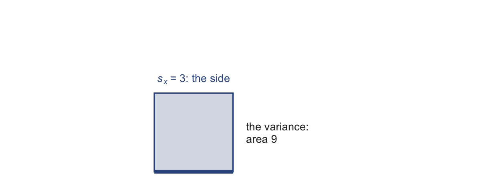
Figure 4: One mean square from step 5: the variance (9) is an area. The square root gives the side: the standard deviation, 3. The thick bottom edge is a stroke again, and soon the ruler.
That is the standard deviation, . And then always an interpretation: on average, the scores are about 3 away from the mean, to the left or to the right. Think of as something like the mean miss: the mean length of a blue stroke.
NoteWhy not just the lengths?
Something like the mean miss, not exactly. The tempting (but wrong) feeling says: drop the minus, add up the lengths and divide by how many there are, an ordinary mean. Then you get here, and not 3. That is a measure of spread too, just a different one from the standard deviation. It isn’t handy, because with squares everything that comes after just flows. So we go with the standard deviation.
That the standard deviation is bigger here is mostly down to the big square of 25: squared, the long stroke counts for much more. A little of it also comes from dividing by n − 1 instead of by n.
You can go on saying on average, the scores are about 3 away from the mean: that is how everyone says it, and about already tells you it isn’t exact.
All in a row
By hand, you put it in a table, with all the in-between answers in it. You could also type it into your calculator in one go, but I would never do that: with a table you can check back as you go. Each column is a step, and the bottom row is step 4:
Steps 2, 3 and 4 for the example, in one table
score
step 2: minus 10
step 3: squared
7
−3
9
9
−1
1
9
−1
1
10
0
0
15
+5
25
total 0
step 4: 36
Below it, the last two steps: and .
As a formula:
Read it from the inside out: is step 2, the square step 3, (adding up) step 4, the fraction step 5, the root step 6. The formula is the step card.
Remember it as a little story: the people walk in one by one, you guess the mean, and every miss is a blue stroke that turns into a square. If you can tell that story, you don’t need the formula any more.
For each step, the card says what you do, and what it means. You learn both by heart: a step you can do but don’t understand is gone again in no time.
NoteThe step card
step
what you do
what it means
1 · Mean
Add up all the scores and divide by n.
your best guess
2 · Blue strokes
Subtract the mean from each score: score minus mean.
a miss: how far off you were
3 · Squaring
Square each stroke.
a square: the minus is gone
4 · Adding up
Add up the squares: the sum of squares.
all the misses together: all the spread
5 · Dividing by n − 1
Divide the sum of squares by n − 1: the variance, .
the mean square (n − 1: the last one is stuck)
6 · Square root
Take the square root of the variance: the standard deviation, .
something like the mean miss: a stroke again
NoteFrom memory — the six steps to sx
Fold the step card above shut (click its title). Take a scrap of paper and write down the six steps, and for each step a few words on what it means. Only then click the check open.
CautionCheck — the six steps to sx
step
what you do
what it means
1 · Mean
Add up all the scores and divide by n.
your best guess
2 · Blue strokes
Subtract the mean from each score: score minus mean.
a miss: how far off you were
3 · Squaring
Square each stroke.
a square: the minus is gone
4 · Adding up
Add up the squares: the sum of squares.
all the misses together: all the spread
5 · Dividing by n − 1
Divide the sum of squares by n − 1: the variance, .
the mean square (n − 1: the last one is stuck)
6 · Square root
Take the square root of the variance: the standard deviation, .
something like the mean miss: a stroke again
Missing a step, or didn’t you know what a step means? Copy the card out once more, then do round 1.
NoteRound 1 — with help
For one day, four people count how often they rewrite a text message before they dare to send it. Their scores are 2, 5, 8 and 9.
Calculate the variance.
Calculate the standard deviation . If the square root doesn’t come out neatly, round to two decimals.
And c: in step 3 every stroke becomes a square, and an area is never negative. A stroke of minus something gives plus something once you square it. Adding up and dividing by a positive number doesn’t make anything negative either. So the variance is 0 or more, and 0 only if everyone sits exactly on the mean.
NoteRound 2 — you draw the table yourself
Five people fill in a short questionnaire about denial, with statements like it’s not that bad and it doesn’t bother me. Their scores are 2, 4, 6, 6 and 7.
Person 5 from the example scores 15. Is that a lot?
You have no idea. 15 what? If you don’t know where the middle is, or how far apart the scores lie, 15 tells you nothing at all. Raw is rubbish: a raw score, cut off from its group, is a number without meaning. The technical name for a raw score is an unstandardised score.
But you have just worked out the middle and the spread: mean 10, standard deviation 3. Now you can do something with it.
The ruler
A z-score is a count: the number of standard deviations between a score and the mean, with a minus in front if the score is below the mean. That’s all it is.
Think of the standard deviation as a little ruler, here 3 long. The z-score is the question: how many times does that ruler fit between the mean and this score?
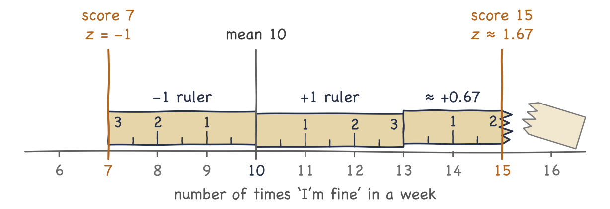
Figure 5: The ruler is 3 long (the standard deviation). To the left, as far as the score 7, it fits exactly once: z = −1. To the right, as far as 15, it fits once completely, and then another roughly 0.67 of a ruler: together z ≈ 1.67.
For person 5:
Just over one and a half rulers above the mean. And person 1, with 7:
Exactly one ruler below. The minus says: below the mean. Never forget it.
A score in rulers is technically called a standardised score, the counterpart of the raw one. That is a name, not an explanation: standardised sounds like a definition but says nothing. A tax form is standardised too.
And back. Getting from z back to the score is a short walk: start at home (the mean), and lay the ruler down z times.
A z of 2 is two rulers above the middle: 16. You never need to rearrange a formula: you just set off from the middle.
At the top are the 5 z-scores, one below the other. Underneath, R shows what it calculated with: scaled:center is the mean (10) and scaled:scale the standard deviation (3). Exactly your step 1 and step 6.
The whole card
This is the step card, now with the step to z added. This is what you know by heart: what you do, and what it means.
NoteThe step card, with z
step
what you do
what it means
1 · Mean
Add up all the scores and divide by n.
your best guess
2 · Blue strokes
Subtract the mean from each score: score minus mean.
a miss: how far off you were
3 · Squaring
Square each stroke.
a square: the minus is gone
4 · Adding up
Add up the squares: the sum of squares.
all the misses together: all the spread
5 · Dividing by n − 1
Divide the sum of squares by n − 1: the variance, .
the mean square (n − 1: the last one is stuck)
6 · Square root
Take the square root of the variance: the standard deviation, .
something like the mean miss: a stroke again
And then z
Score minus mean, divided by .
how many times the ruler fits; a minus if you are below the mean
NoteRound 3 — from memory: sx and z
Fold the card above shut and write it out without looking. Only then calculate.
Five people score on a questionnaire about fear of abandonment: how afraid are you that someone you love will leave you? The score runs from 0 to 20. Their scores are 6, 10, 10, 12 and 17.
Calculate .
What is the z-score of someone with 17?
And of someone with 6?
Say in words what the z-score from b means.
CautionShort answer round 3
= 4
z = 1.50
z = −1.25
The score 17 lies one and a half rulers above the mean.
And then z. and . The first lies one and a half rulers above the mean, the second a little over one ruler below it: that is d, in words.
The bell: area is probability
So far you have set a score against a handful of people: your own sample, with and . Often you already know the whole group. On a worry questionnaire, for example, scores in the general population are normally distributed, with mean μ = 50 and standard deviation = 10. (You’ll meet the same questionnaire again in week 1.) Greek letters for the population, Latin ones for your sample; the z calculation stays exactly the same.
The normal distribution is a smooth, symmetrical bell. Which bell you have depends on two numbers:
the mean μ says where the middle is;
the standard deviation says how wide the bell is.
TipThe σ of what?
That little x says what this is the spread of: the scores x. Many books and teachers leave it out and write just σ. We don’t, because then it’s the σ of what? Soon a second σ comes along, the one of sample means, and then you want to see at once which one it is. If you see a bare σ from a teacher, in another book or in an exam question, it is this one: .
You already did this with your own sample: there you wrote , not a bare s. The same little x, for the same reason.
Figure 6: Three normal distributions. On the left, the worry questionnaire (μ = 50, = 10). Next to it, the same width with a different middle (μ = 70), and on the right the same middle with = 5. Behind those two, the worry questionnaire is drawn as a dashed line. The area under every bell is 1, so the bell that is two times as narrow is two times as tall.
From a bell like this you don’t read off counts but area. The whole area between the axis and the bell is 1, for every bell. That is why the narrow bell is taller: the same amount has to fit underneath.
On the axis is the event: a score. Above it, between the axis and the bell, is the probability: the piece of area above that part of the axis. That is the probability that a randomly chosen person scores there.
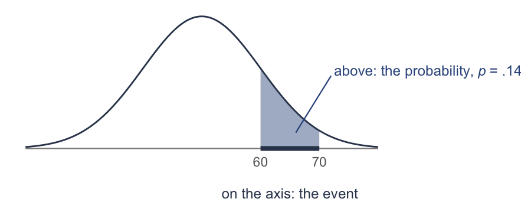
Figure 7: On the axis, the event: a worry score between 60 and 70. Above it, the probability: the blue piece of area above that part of the axis, p = .14.
In shorthand: . You read it as: “x is normally distributed with mean μ and standard deviation ”. The worry questionnaire is : the left one of the three little bells above.
Watch out: sometimes you are given not the standard deviation but the variance , its square. Then take the square root first, just as in step 6. A variance of 100 means .
TipA single exact score has probability zero
A point on the axis is infinitely thin, and above something infinitely thin there is no area. So with a smooth bell it makes no difference whether you ask “higher than 65” or “65 or higher”: it is the same probability.
In week 1 you count dots instead of area, and there the boundary does count. That is not a contradiction: a dot is a real thing, a point on a smooth axis is not.
The 68–95–99.7 rule
Every normal distribution has the same shape. So if you measure out in standard deviations from the middle, the same amount of area always lies in the same place:
within one standard deviation of the middle lies about .68;
within two standard deviations about .95;
within three standard deviations about .997.
So out of 100 people, about 68 score between 40 and 60 on the worry questionnaire, and about 95 between 30 and 70.
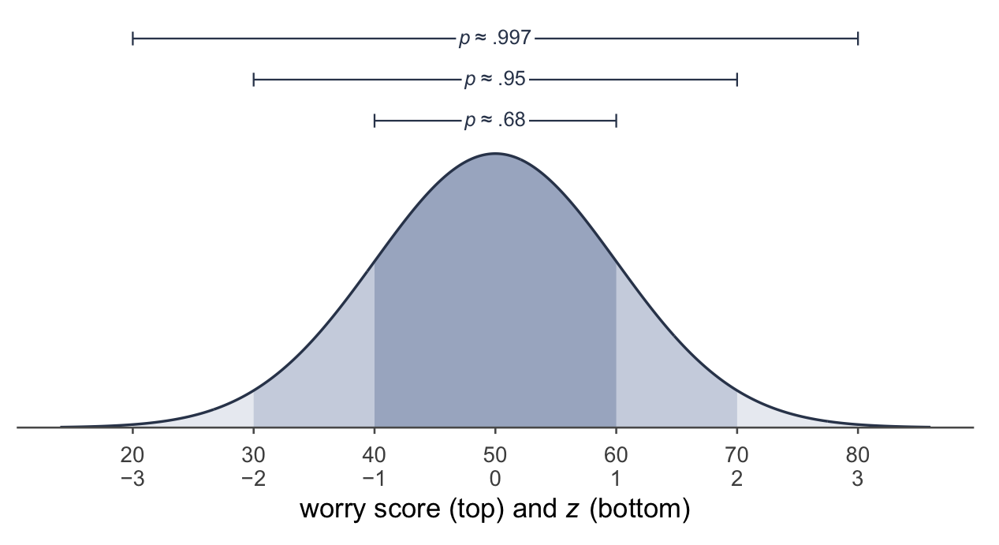
Figure 8: The 68–95–99.7 rule for the worry questionnaire (μ = 50, = 10). Within one standard deviation of the middle lies about .68 of the area, within two about .95, within three about .997.
Why not 1? Because the tails go on for ever. They just get very thin.
The tails follow from the rule. Whatever is not inside the limits lies outside them, half on the left and half on the right:
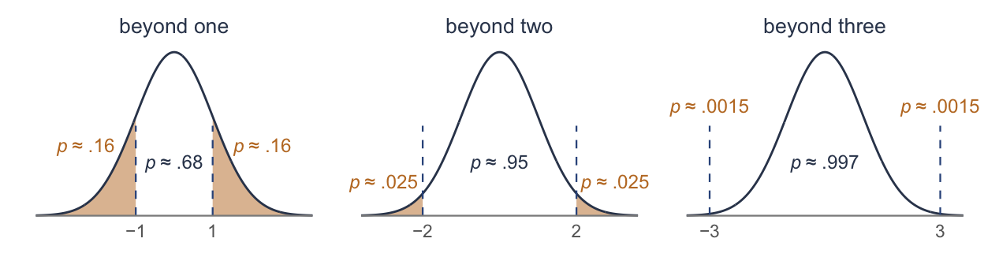
Figure 9: The tails from the rule. Beyond one standard deviation from the middle lies about .16 on each side, beyond two about .025, beyond three about .0015. The middle shows what the rule puts inside the limits; the middle and the two tails together make 1. Beyond three the tail is too thin to see, but it is still there.
So to the right of one standard deviation above the middle lies about .16, to the right of two about .025, to the right of three about .0015. The further out, the smaller the tail. So on an intelligence test: Einstein has the smallest tail, because he is the furthest out.
NoteCheck in R — does the rule hold?
The rule is rounded. R works out the area exactly; how pnorm() works comes later this week.
# within one, two and three standard deviations of the middlepnorm(1) -pnorm(-1)
[1] 0.6826895
pnorm(2) -pnorm(-2)
[1] 0.9544997
pnorm(3) -pnorm(-3)
[1] 0.9973002
Rounded, .683, .954 and .997. The rule says .68, .95 and .997: close enough to work with.
NoteRound 4 — from memory, with the rule
First the card, from memory. Then calculate.
For a week, six people write down how often they get annoyed at something in someone else that they actually do themselves. Their scores are 7, 10, 13, 14, 16 and 18.
Calculate .
Calculate the z-score for each of the six.
How many of the six lie within one ruler of the mean? And how many would you expect from the 68–95–99.7 rule?
CautionShort answer round 4
= 4
In the order of the scores: −1.50, −0.75, 0.00, 0.25, 0.75 and 1.25.
There are 4 within one ruler. By the rule, about : so roughly four.
Within one ruler means: a z between −1 and 1. There are 4 of those. The rule says that about .68 lies within one ruler, and of 6 people that is , roughly four. That works out nicely here, but with so few people it is also a bit of luck: the rule holds for a whole, normally distributed group.
The same z, against the whole group
With a whole group, the ruler is , and you measure from μ:
The same calculation as with your five people, just with Greek letters. Someone scores 65 on the worry questionnaire:
One and a half rulers above the middle. That already says more than 65.
And back is another walk out from the middle:
Read as one and a half times a ruler of 10.
You’ll also meet z as a z-value. In testing, that is what it is usually called. Then you do the same kind of division, but you don’t measure how far one person is from the middle: you measure how far the mean of a sample is from it.
TipStandardising doesn’t make anything normal
Convert a whole group of scores into z-scores, using the mean and the standard deviation of that group (as scale() does), and the mean of those z-scores is always 0 and their standard deviation always 1. But the shape stays. If the distribution was skewed, it still is after converting. The bell and everything below only work if the scores themselves are (roughly) normally distributed.
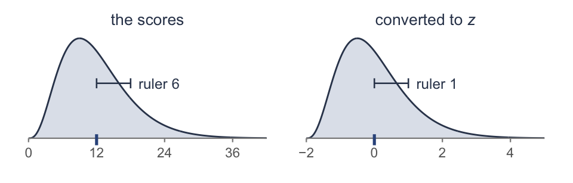
Figure 10: On the left, scores with a skewed distribution, mean 12 (the blue tick) and standard deviation 6. The mean is not under the peak: the long tail on the right pulls it along. On the right, the same scores as z: the mean has become 0 and the ruler 1, but the shape is exactly the same. Still skewed.
From z to a probability
Even z-scores are still rubbish, really. Only a probability truly says something: “only about 7 in 100 people worry more than I do” is something everyone understands.
Rule 1: draw it first
Before you calculate a single number: sketch a bell, put the middle in, put your score on the axis, and shade the piece you are looking for. It doesn’t have to be pretty; the direction has to be right.
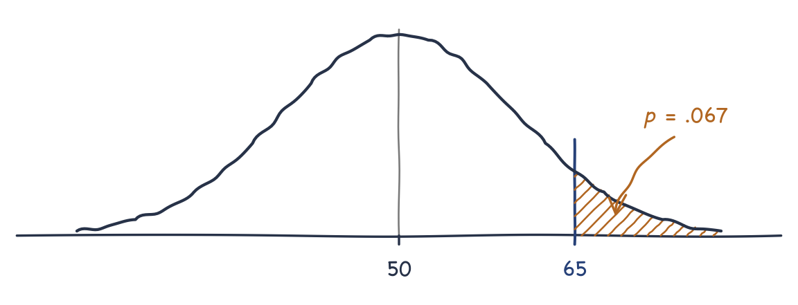
Figure 11: This is what your sketch may look like: a bell, the middle at 50, your score 65 on the axis, and the piece to its right shaded. Wobbly is fine, as long as the direction is right. You only write the probability in once you have it; here it is already there (p = .067), so you can see where it goes.
Two kinds of piece:
a split in two: one boundary, a piece on the left and a piece on the right. That goes with lower than or higher than, and you look at one tail;
a split in three: two boundaries, equally far from the middle. That goes with at least as far from the middle, on either side, and you look at two tails together.
When you later test on a bell like this, a probability from one tail is called one-tailed, and a probability from two tails together two-tailed.
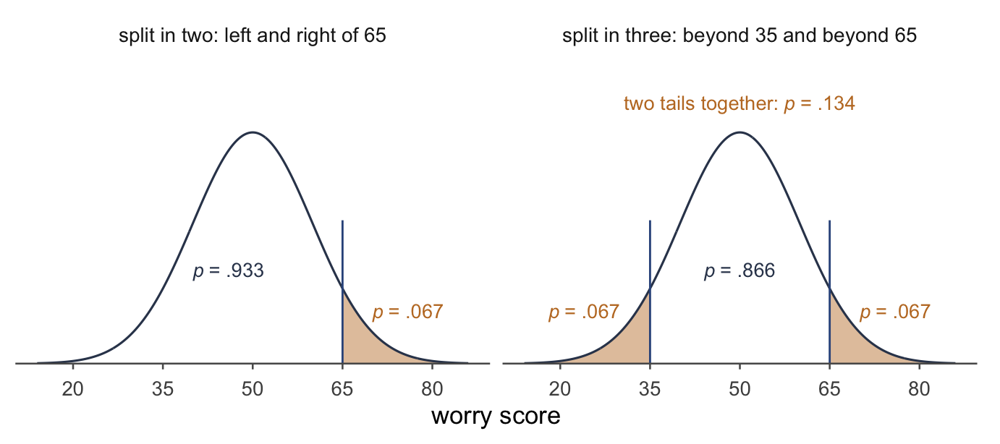
Figure 12: On the left, the split in two at 65: .933 lies to the left, .067 to the right; one tail. On the right, the split in three: two tails of .067 each, together .134, and a middle of .866. Each p is the probability of that piece.
By hand: the rule gives a range
lies between one and two rulers. To the right of lies about .16, to the right of about .025. So the tail to the right of 1.50 sits in between: smaller than .16, bigger than .025.
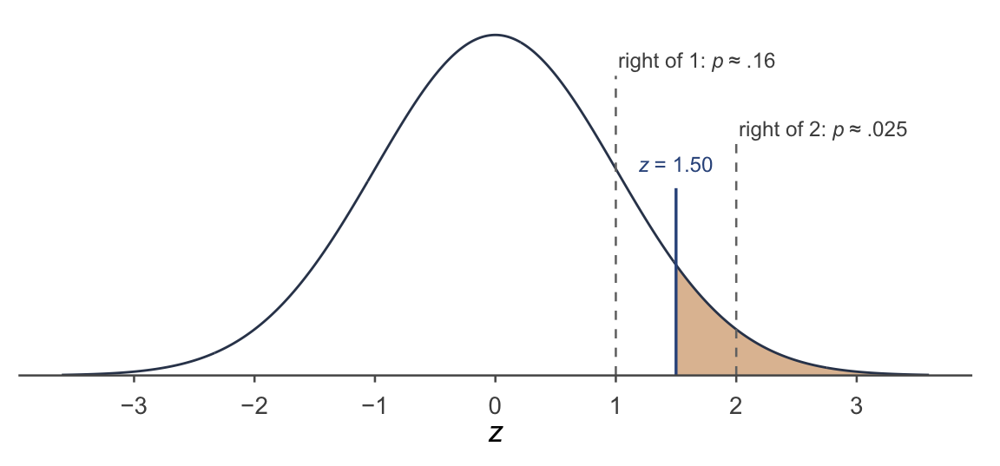
Figure 13: By hand: to the right of z = 1 lies, by the rule, about .16, to the right of z = 2 about .025. The orange tail to the right of z = 1.50 sits in between.
That isn’t exact, but often it is enough: in a multiple-choice question, usually only one option falls within that range.
With table A: the bell in numbers
At the back of the Dutch edition is table A. For every z with two decimals, it gives the area to the left of it: the bell, but in numbers.
Look up z = 1.50: row 1.5, column .00. There you find .9332. That much of the bell lies to the left of z = 1.50.
To the right is the rest: 1 − .9332 = .0668.
That is indeed between .025 and .16, as the rule said. And in a moment pnorm() gives exactly the same.
Exactly: pnorm()
pnorm() gives the area to the left of a z. If you want the area to the right, you add lower.tail = FALSE.
# left of z = 1.5: the big side of the two-way splitpnorm(1.5)
[1] 0.9331928
# right of it: the small sidepnorm(1.5, lower.tail =FALSE)
[1] 0.0668072
Left .933, right .067. Those two add up to 1, because together they are the whole bell. Indeed between .025 and .16: about 7 in 100 people score higher than 65.
Give pnorm() only a z and it calculates in the bell of z itself: mean 0, standard deviation 1. That bell is called the standard normal distribution, . How to make R calculate on the scale of your own questionnaire is in In R: probabilities from the bell.
The split in three. How many people score at least as far from 50 as 65, on either side? Equally far on the other side is 35, at z = −1.50. The bell is symmetrical, so the tail to the left of 35 is exactly as big as the one to the right of 65. Two tails together, so one tail times two:
# two tails: the right tail, times two2*pnorm(1.5, lower.tail =FALSE)
[1] 0.1336144
# or the left tail of -1.5, times two: the same2*pnorm(-1.5)
[1] 0.1336144
That times two is allowed here, because a smooth bell is exactly the same size on both sides. A dot plot, as in week 1, looks like such a bell but is never exactly symmetrical; there you really count both sides.
The three anchors
Three values of z keep coming back. After a few weeks you’ll know them without trying:
The three anchors of the normal distribution
z
right of it (one tail)
outside ±z (two tails together)
between −z and z
1.645
.05
.10
.90
1.96
.025
.05
.95
2.576
.005
.01
.99
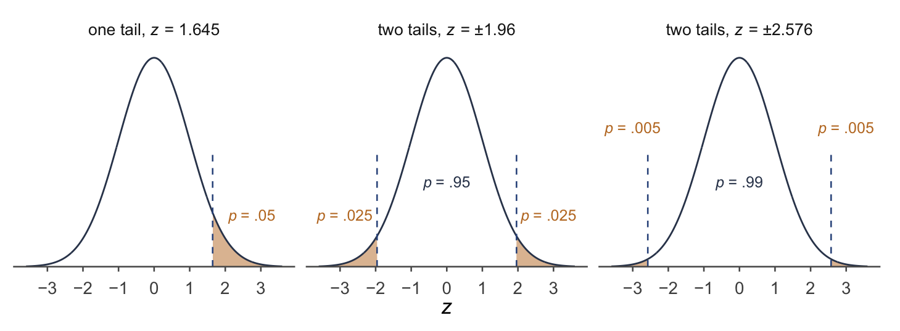
Figure 14: The three anchors. To the right of 1.645 lies .05 (one tail). Beyond ±1.96 lies .025 on each side, together .05. Beyond ±2.576, .005 on each side, together .01.
1.96 is the holy z-value. By the rule of thumb, .95 lies within two rulers; more precisely, it lies within 1.96. At 1.96 there is .025 in each tail, together .05.
1.645 is the other holy z-value, and it often gets mixed up with the first. At 1.645 there is .05 in one tail. Draw it, and you’ll see.
In testing, the anchors are called critical z-values.
Reasoning with the anchors. You can place any z between the anchors. But look at your drawing first: one tail or two?
One tail. Our lies below 1.645, so to the right of it lies more than .05. Right: pnorm() gives, rounded, .067.
Two tails together. A z of 2.40 lies between 1.96 and 2.576. Further out than 1.96, so together less than .05. Not as far as 2.576, so together more than .01.
You don’t have an exact number, but you do have enough to decide.
NoteRound 5 — from memory: from variance to anchor
On a questionnaire about self-acceptance (how gentle are you with yourself when something goes wrong?), scores in the population are normally distributed. The mean is 30 and the variance is 25. Someone scores 38.
What is that person’s z-score?
Are they in the highest .05? Use only an anchor.
Check b with pnorm().
CautionShort answer round 5
z = 1.60
No, but only just.
To the right of 1.60 lies .055: a little more than .05.
CautionFull worked answer round 5 — step by step
The question gives the variance, not the standard deviation. The ruler is the square root, just as in step 6: . Then
Anyone who divides by 25 instead of by 5 gets 0.32: far too small.
The highest .05 starts at the first anchor, 1.645. Their 1.60 lies just below it, so to the right of it lies just a little more than .05. This person is only just outside it.
In R, pnorm(1.6, lower.tail = FALSE) gives the area to the right: .055.
Probability and percentage
A probability is a part of the whole, and runs from 0 to 1. If you hear proportion, that is the same thing. A percentage is the same part, but per hundred. The same number in different clothes:
from probability to percentage: times 100. That turns .025 into 2.5%.
from percentage to probability: divided by 100. That turns 5% into .05.
You’ve actually done it already. To the right of 65 lies .067, and earlier on this page that appeared as “about 7 in 100 people”: that is 6.7%, rounded.
Not sure which way? Ask yourself whether the number should get bigger or smaller. The percentage is always the bigger number of the two: 0.15% against .0015.
You calculate in probabilities, as you have all week. Percentages are friendly for telling people, and you meet them in articles and exam questions. If there’s a percentage, divide by 100 first, and only then calculate.
WarningCount the zeros
Small numbers are nasty little numbers. One zero too many or too few, and your probability is ten times too small or too big: .005 is not .05. Skip the zeros altogether and .0015 suddenly becomes 15%, when it is 0.15%.
So count the zeros between the point and the first digit that isn’t a zero. In .05 there is one, in .005 two.
A 0 before the point doesn’t count. R always puts one there; this book only puts one in a percentage: .0015 as a probability, 0.15% as a percentage.
Take z = 2.40 from above, and the two tails together:
# z = 2.40: the two tails together2*pnorm(2.4, lower.tail =FALSE)
[1] 0.01639507
One zero, so .016. Put it next to .05 and .01, which also have one: below .05, not below .01. Exactly what the anchors said.
One zero too few, .16, and suddenly there is more than .05.
One zero too many, .0016, and suddenly there is less than .01.
Two different conclusions, both because of one zero.
Type it in, and read with a magnifying glass. Even if you know how to do it: leave the arithmetic to your calculator or to R, and use your head to check. Is the percentage the bigger number? In R you don’t even have to copy anything across:
# right of z = 1.5: R works out the probability, * 100 turns it into a percentagepnorm(1.5, lower.tail =FALSE) *100
[1] 6.68072
Rounded, 6.7%: the .067 from above, per hundred. If you do have to read a small number off a screen, zoom in (Ctrl or Cmd and +) and put your finger on it. Say out loud what comes after the point if you need to. For 0.0668072 that is zero, six, six, eight: one zero, so .067.
Back: from a probability to a score
Now the other way round. What you are given decides the direction. Given a score and looking for a probability, you go score → z → probability. Given a probability and looking for a score, you go probability → z → score.
Above which worry score are the 5 biggest worriers out of every 100?
Draw. One tail on the right, of .05: a split in two.
Find the z. To the right of 1.645 lies .05: the first anchor.
Walk back. .
Anyone who scores higher than 66.45 is among those 5 in 100.
qnorm() does the same in one go: you give an area to the left, and R gives the z (or the score) that goes with it.
# which z has .95 to its left (and so .05 to its right)?qnorm(0.95)
[1] 1.644854
# and straight away as a worry scoreqnorm(0.95, mean =50, sd =10)
[1] 66.44854
That is also how the anchors come out of R: qnorm(0.975) gives, rounded, 1.96, and qnorm(0.995) gives, rounded, 2.576.
In R: probabilities from the bell
Two functions, and each is the other’s reverse:
pnorm() gets a place on the axis and gives an area (to the left, unless lower.tail = FALSE);
qnorm() gets an area (to the left) and gives a place on the axis.
Give them only a z or an area and they calculate in the bell of z. Give them mean and sd as well, and they calculate on the scale itself, so you don’t have to work out z first:
# higher than 65 on the worry questionnaire: in one gopnorm(65, mean =50, sd =10, lower.tail =FALSE)
[1] 0.0668072
The same number as via . A common mistake is to do both at once: pnorm(1.5, mean = 50, sd = 10). Then you are asking R about a worry score of 1.5, and you get a number close to 0. R puts it on your screen as 6.173074e-07. That e-07 means: move the point seven places to the left. Written out, it is 0.0000006173074: six zeros between the point and the 6, and the 6 itself in the seventh place. For someone one and a half rulers above the middle, that is suspiciously small: a sign that you asked R something other than what you meant.
A whole column at once. The practice dataset slaapstudie (Dutch for sleep study) comes with you through the whole book: 30 poor sleepers, with, among other things, their worry score before a sleep training (piekeren_voor: piekeren is worrying, voor is before). Download slaapstudie.RData and put it in your project folder. (No project yet? In RStudio: File > New Project…, then New Directory > New Project. The folder you choose there is your project folder.) Then:
## Load the data ----load("slaapstudie.RData")
This is how you convert that whole column into z-scores relative to the general population. Two signs you need for it:
slaapstudie$piekeren_voor takes one column out of the table, by its name;
<- stores what is on the right under the name on the left, here as a new column z_voor (z before).
# z per person: (score - 50) / 10slaapstudie$z_voor <- (slaapstudie$piekeren_voor -50) /10# the first six rows, with the new columnhead(slaapstudie)
id groep leeftijd piekeren_voor piekeren_na z_voor
1 1 training 19 54 51 0.4
2 2 controle 24 49 45 -0.1
3 3 training 19 48 47 -0.2
4 4 training 26 54 55 0.4
5 5 controle 34 61 58 1.1
6 6 controle 21 54 56 0.4
The other columns are Dutch too: groep is the group (training, or controle for the control group), leeftijd is age, and piekeren_na is the worry score after the training.
Check the first row: . In exercise 0.6 you carry on with that column.
A round for tomorrow. The rounds on this page have fixed numbers. If you want another round tomorrow, with numbers you don’t know yet, let R give them to you. sample(1:20, 5) draws five whole numbers between 1 and 20, different ones every time:
# five new scores with a whole-number mean, different every timerepeat { x <-sample(1:20, 5); if (sum(x) %%5==0) break }x# by hand first; only then:mean(x)sd(x)
Calculate by hand first, and only look afterwards. That repeat line keeps drawing until the mean is a whole number, so the strokes stay whole. If you want it the way it is in an exam, with decimals, leave it out and write just x <- sample(1:20, 5). Don’t round within one calculation: type the whole fraction under the root in at once.
On to week 1
So far you have set one score against a group, and the ruler is the standard deviation . Here μ was the mean of the general population, and that was known: 50.
In week 1 it turns round. The population is then all poor sleepers, and their μ you don’t know: that is the very question. And one dot there is no longer a person but the mean of a whole sample. Means like that lie much closer to the middle than single scores: the ruler gets shorter. That shorter ruler is called the standard error.
The walk stays exactly the same: score, z, probability, and back. In week 1 you count those means as dots. How much shorter the ruler is, and why the dots form a bell, you work out in week 2 (Hypothesis tests for one mean).
Practice
First rounds without help, then the exercises.
NoteRound 6 — the same amount less, or twice as much
The same five people keep track for another week, a quiet one. Their scores are now 4, 6, 6, 7 and 12.
Look at the scores first, and compare them with those from the example (7, 9, 9, 10 and 15). What do you expect for the mean? And for ?
Work it out.
And if in the first week they had all said I’m fine exactly twice as often (14, 18, 18, 20 and 30)? What happens then to the mean, to , and to the z of person 5?
CautionShort answer round 6
Everyone scores exactly 3 lower. The mean moves down with them; stays the same.
The mean is 7 and = 3, just as in the example.
The mean and become twice as big (20 and 6); the z stays the same.
The blue strokes are exactly the same as in the example. If everyone shifts by the same amount, only where the scores lie changes, not how far apart they are. The mean moves with them; the standard deviation doesn’t.
And c: twice as much is something different from the same amount added. The mean becomes 20, and every stroke becomes twice as long. A square then becomes four times as big (twice as wide and twice as tall), and so does the variance: from 9 to 36. The square root turns that back into twice: goes from 3 to 6. So the ruler grows just as fast as the strokes. And z counts how many times the ruler fits, and a stroke twice as long divided by a ruler twice as long gives the same. Person 5 had z ≈ 1.67, and with 30 they still do: .
NoteRound 7 — the last one is stuck
For one day, four people keep track of how many white lies they tell. On average it is 5. For three of the four you know it: 3, 9 and 4.
How many white lies did the fourth person tell?
What does that have to do with dividing by n − 1?
Calculate .
CautionShort answer round 7
The fourth person told 4.
Of the four, only three were free to move; the last one is stuck.
≈ 2.71
CautionFull worked answer round 7 — step by step
On average 5 over four people: together . The first three together 16, so the fourth: .
As soon as the mean is fixed, the last one has no choice left. Of the four misses, only three are free. That is why in step 5 you divide by 4 − 1 = 3.
Step 6 · Square root. . Under the root is the fraction, not the rounded number 7.33: within one calculation you don’t round. An answer you write down, such as ≈ 2.71, you may use rounded after that.
NoteRound 8 — as in an exam: a mean with decimals
For a week, five people count how often they wanted to say something and swallowed it after all. Their scores are 6, 4, 8, 9 and 10.
Calculate . The mean is not a whole number; the steps stay the same.
What is the z-score of someone with 4?
Say in one sentence what means here.
CautionShort answer round 8
≈ 2.41
z ≈ −1.41
On average, the scores are about 2.41 away from the mean of 7.40, to the left or to the right.
CautionFull worked answer round 8 — step by step
Step 1 · Mean.
Step 2 · Blue strokes.Step 3 · Squaring.Step 4 · Adding up. Now with decimals; the strokes still add up to 0, so the check still works.
Round 8: steps 2, 3 and 4
score
step 2: minus 7.40
step 3: squared
6
−1.40
1.96
4
−3.40
11.56
8
+0.60
0.36
9
+1.60
2.56
10
+2.60
6.76
total 0
step 4: 23.20
Step 5 · Dividing by n − 1.
Step 6 · Square root.
And then z.
NoteExercise 0.1 — By hand: z and back
Scores on a concentration test are normally distributed with μ = 100 and = 15.
Someone scores 82. Calculate the z-score.
Which score goes with ?
Does the score of 82 fall within the middle .68 of the scores on the test? Yes or no?
CautionShort answer 0.1
z = −1.20
130
No.
CautionFull worked answer 0.1 — step by step
How many times does the ruler of 15 fit between the middle and 82?
The minus says: below the mean. Don’t forget it.
Walk two rulers to the right from the middle: .
The middle .68 lies within one ruler of the middle, so between 85 and 115. With z = −1.20, the score is further than one ruler from the middle: outside it.
NoteExercise 0.2 — With the rule
Reaction times on a computer task are normally distributed with μ = 400 ms and = 50 ms. There are 200 people taking part. Use only the 68–95–99.7 rule.
What proportion of people has a reaction time between 350 and 450 ms?
What proportion reacts faster than 300 ms?
How many of the 200 people react more slowly than 500 ms?
Is the probability of a reaction time above 550 ms smaller than .01? Yes or no?
CautionShort answer 0.2
about .68
about .025
about 5
Yes.
CautionFull worked answer 0.2 — step by step
Both 350 and 450 lie one ruler (50 ms) from the middle. Within one ruler lies about .68.
. What lies outside two rulers is , and half of that on this side: about .025. Fast is on the left here: a short reaction time.
The time of 500 is two rulers above the middle. To the right of it lies about .025, and of 200 people that is .
Yes. The time of 550 is three rulers above the middle. To the right of it lies , far below .01.
NoteExercise 0.3 — With table A and with pnorm()
Use the worry questionnaire: μ = 50, = 10. Draw first. Then look it up in table A, and check it with pnorm().
What proportion of people score lower than 42?
What proportion score higher than 58?
What proportion score between 42 and 58?
What proportion score at least as far from 50 as 58, on either side?
CautionShort answer 0.3
Figure 15: This is what your drawing might look like: the same bell four times (μ = 50, = 10; under each score, its z). What is coloured is what the question asks for: orange for a tail, blue for the middle. Table A always gives the probability to the left of the line: for question a, that is the orange tail itself; for b, the white part (.788), and the part on the right is what is left. In d both sides count: 42 lies as far below 50 as 58 lies above it. Together, c and d make the whole bell, and so do the orange tail of question a and the white part of b: that is how you check your drawing without a table.
Exercise 0.3 in two ways
table A
pnorm()
a
.2119
.212
b
.2119
.212
c
.5762
.576
d
.4238
.424
CautionFull worked answer 0.3 — step by step
. A split in two, and you want the left side. That is exactly what table A gives: row −0.8, column .00, .2119. In R you do that with pnorm(-0.8): .212.
. Now the right side. At row 0.8, column .00, table A gives the probability on the left: .7881. So the right is 1 − .7881 = .2119. In R, pnorm(0.8, lower.tail = FALSE) gives .212. The same number as in a: the two scores are equally far from the middle, and the bell is symmetrical.
The middle of a split in three: the big one minus the small one. Everything to the left of 58, minus everything to the left of 42: . Everything minus the two tails gives the same. R gives .5763: a difference of one in the fourth decimal, because you subtracted one rounded cell from another. To three decimals they agree: .576.
The two tails together: . R gives .4237; again, only the rounding differs. Together with c, it is exactly 1.
pnorm(-0.8) # a
[1] 0.2118554
pnorm(0.8, lower.tail =FALSE) # b
[1] 0.2118554
pnorm(0.8) -pnorm(-0.8) # c: the big one minus the small one
[1] 0.5762892
2*pnorm(-0.8) # d: z of 42 is negative, so left
[1] 0.4237108
NoteExercise 0.4 — With the anchors
Use only the three anchors (1.645, 1.96, 2.576). For each z, fill in: yes or no.
Three questions per z, and only the anchors are allowed
z
right of it less than .05?
outside ±z together less than .05?
outside ±z together less than .01?
1.20
1.80
2.20
2.70
CautionAnswer 0.4
The answers
z
right < .05?
together < .05?
together < .01?
1.20
no
no
no
1.80
yes
no
no
2.20
yes
yes
no
2.70
yes
yes
yes
The key: the further beyond an anchor, the smaller the tail.
One tail below .05 needs a z of at least 1.645.
Two tails together below .05 need at least 1.96.
Two tails together below .01 need at least 2.576.
Look at 1.80: to the right of it lies less than .05, but not both tails together. That is the difference between one and two tails, and the difference between 1.645 and 1.96.
z <-c(1.2, 1.8, 2.2, 2.7)pnorm(z, lower.tail =FALSE) # one tail
Above which score are the highest .025 of the scores? Use an anchor.
Between which two scores lies the middle .99 of the scores?
Check a and b with qnorm().
Two ways. Where do the anchors come from? In table A, find the z with .975 to its left, and the z with .995 to its left. This time you don’t look along the edges but in the middle of the table, among the probabilities. If you can’t find it exactly, look in the row of table D (in Dutch).
CautionShort answer 0.5
69.60
24.24 and 75.76
qnorm(0.975, mean = 50, sd = 10), qnorm(0.005, mean = 50, sd = 10) and qnorm(0.995, mean = 50, sd = 10)
1.96 is in table A exactly. At .995, table A can’t choose (between 2.57 and 2.58); table D gives 2.576.
CautionFull worked answer 0.5 — step by step
A tail of .025 on the right goes with 1.96. Walk back: .
The middle .99 means .005 in each tail: the anchor 2.576, on both sides. and .
qnorm() wants the area to the left. A right tail of .025 is .975 on the left; the upper limit of the middle .99 has .995 to its left.
qnorm(0.975, mean =50, sd =10) # a
[1] 69.59964
qnorm(0.005, mean =50, sd =10) # b, the lower limit
[1] 24.24171
qnorm(0.995, mean =50, sd =10) # b, the upper limit
[1] 75.75829
First .975. That one is in the table exactly: row 1.9, column .06. So z = 1.96, your anchor. Left .975, so right .025: that is how 95% in the middle goes with .025 in each tail.
Then .995. That one is not in the table. You find .9949 at 2.57 and .9951 at 2.58, and .995 lies exactly halfway between them. So table A can’t choose. Table D has one more decimal: in the row, column .005, it says 2.576. That is your third anchor, and it is the one this book calculates with.
NoteExercise 0.6 — In R: do poor sleepers worry more?
Use slaapstudie and the column z_voor from In R: probabilities from the bell.
How many of the 30 poor sleepers have a z above 1.645?
How many would you expect if they were 30 random people from the general population?
What is the mean of z_voor? Why isn’t it 0?
CautionAnswer 0.6
# a. how many above 1.645?sum(slaapstudie$z_voor >1.645)
[1] 4
# b. expected: 30 times the tail to the right of 1.64530*0.05
[1] 1.5
# c. the mean of zmean(slaapstudie$z_voor)
[1] 0.4166667
There are 4.
To the right of 1.645 lies .05, so .
The mean is 0.42. You standardised with the mean of the general population (50), not with the mean of these 30 people. Their mean worry score is 54.17, and that lies 0.42 of a ruler above 50. Standardise with their own mean and their own standard deviation, and then the mean is 0. That is what scale() does; here you wanted the general population as the yardstick.
More people above 1.645 than expected, and a mean above 50. So do poor sleepers worry more? Or is it just these 30, by chance? That is exactly the question of week 1.
Exam block
This is how you might meet it in an exam: multiple choice with four options. All you need is your calculator and your cheat sheet. A probability you can’t know off the top of your head is given in the question; otherwise you reason with the rule or the anchors. The exam does not ask you to look anything up in table A; you did that in exercises 0.3 and 0.5, to check yourself.
NoteQuestion 1 — multiple choice
Scores on a memory test are normally distributed with μ = 40 and = 8. What is the z-score of someone with 30?
−1.25
1.25
−10
−0.80
CautionAnswer question 1
A. . B forgets the minus, C is the difference without the ruler, still in unstandardised points: raw is rubbish. D divides the other way round.
NoteQuestion 2 — multiple choice
A scale is normally distributed with μ = 50 and = 10. According to the 68–95–99.7 rule, what proportion scores higher than 70?
.05
.975
.025
.95
CautionAnswer question 2
C. A score of 70 lies two rulers above the middle. Outside two rulers lies about .05, and half of that on the right. A counts both tails, B is everything to the left of 70, and D is the middle.
NoteQuestion 3 — multiple choice
Scores on a questionnaire are normally distributed with mean 20 and variance 16. What is the z-score of someone with 26?
0.38
1.50
6.00
0.67
CautionAnswer question 3
B. The question gives the variance, not the standard deviation. The ruler is its square root: . Then . A divides by the variance, C is the difference without the ruler, and D divides the other way round.
NoteQuestion 4 — multiple choice
You find z = 1.75. How big is the area in both tails together, beyond −1.75 and 1.75?
smaller than .01
between .01 and .05
between .05 and .10
bigger than .10
CautionAnswer question 4
C. The z of 1.75 lies between 1.645 and 1.96. Outside ±1.645 lies .10 together, outside ±1.96 together .05. Further out than 1.645, so less than .10; not as far as 1.96, so more than .05. (Exactly: .080.)
B is the trap: to the right of 1.75 there is less than .05, but that is one tail. The question is about both tails together. A would need a z beyond 2.576, and D a z below 1.645.
NoteQuestion 5 — multiple choice
At which z does .05 of the area lie to the right?
0.05
1.96
2.576
1.645
CautionAnswer question 5
D. B is the trap: at 1.96 there is .025 to the right, and .05 in both tails together. At C there is .005 to the right. A confuses the place on the axis with the area.
NoteQuestion 6 — multiple choice
A scale is normally distributed with μ = 100 and = 15. Above which score are the highest .025 of the scores?
129.40
124.68
138.64
115.00
CautionAnswer question 6
A. One tail of .025 on the right goes with 1.96: . B uses 1.645, the anchor for .05 in one tail. C uses 2.576, the anchor for .005. D is one ruler above the middle, and above that lies about .16.
NoteQuestion 7 — multiple choice
A skewed variable is converted into z-scores, using its own mean and its own standard deviation. What is true of those z-scores?
mean 0, standard deviation 1, and normally distributed
mean 0, standard deviation 1, and symmetrical
the same mean as before, and standard deviation 1
mean 0, standard deviation 1, and just as skewed as before
CautionAnswer question 7
D. Converting to z moves the middle to 0 and makes the ruler 1 long. The shape stays: what was skewed stays skewed. A and B claim that the shape changes. C forgets that the middle moves to 0.
NoteQuestion 8 — multiple choice
A scale is normally distributed with μ = 100 and = 15. The probability of a score above 118 is .115. What proportion scores at least as far from 100 as 118, on either side?
.115
.230
.770
.885
CautionAnswer question 8
B. A split in three: two tails together. To the right of 118 lies .115, and the bell is symmetrical, so to the left of 82 lies the same. Together . A is only one tail, C is the middle, D is everything to the left of 118.
NoteQuestion 9 — multiple choice
An article says that 0.5% of the participants dropped out early. How do you write that as a probability?
.5
.05
.005
.0005
CautionAnswer question 9
C. From percentage to probability you divide by 100: . Count the zeros: two. B is the classic mistake: one zero too few, and your probability is ten times too big. A forgets to divide, and D has a zero too many.
NoteQuestion 10 — multiple choice
A sample of four people scores 5, 7, 9 and 11. What is the variance ?
5.00
2.58
2.00
6.67
CautionAnswer question 10
D. The mean is 8, the strokes are −3, −1, +1 and +3, the squares 9, 1, 1 and 9, together 20. Divided by 4 − 1 = 3: .
A divides by 4 instead of by 3. B is the standard deviation, one step too far: the square root of the variance. C is the mean of the lengths without the minus: the tempting (but wrong) feeling from the box Why not just the lengths?
NoteQuestion 11 — multiple choice
In a study of love, someone records each participant’s love style: passionate (1), playful (2) or friendship-based (3). The mean of those numbers is 2.1. Which is right?
That mean says nothing: love style is nominal.
That mean is fine, because each style has a number.
That mean is fine, because love style is ordinal.
The mean is fine, the standard deviation isn’t.
CautionAnswer question 11
A. The numbers are name tags. Playful is not “more” than passionate, so there is no order and certainly no distance. A mean and a standard deviation only make sense from interval upwards. B thinks giving something a number makes it a quantity; C sees an order that isn’t there; D makes a distinction between the mean and the standard deviation that isn’t there.
NoteQuestion 12 — multiple choice
Because of a scoring error, everyone on a questionnaire about shame is given 5 extra points afterwards. What happens to the mean and to the standard deviation ?
Both 5 higher.
The mean 5 higher, stays the same.
The mean stays the same, becomes 5 higher.
Both stay the same.
CautionAnswer question 12
B. Everyone shifts by the same amount, so the mean moves with them. The blue strokes stay exactly as long, so stays the same (as in round 6). A and C make move along; D forgets that the mean moves.
NoteQuestion 13 — multiple choice
In a group, the mean is 20 and the standard deviation 4. Someone has z = −1.50. What is their score?
26
16
6
14
CautionAnswer question 13
D. Walk one and a half rulers to the left from the middle: . A forgets the minus and goes to the right. B lays down only one ruler and forgets the half. C is only the distance, without the middle.
Self-test: without a cheat sheet
This is the end of chapter zero, and the test of whether it has stuck. Put everything away: no notes, no card. Just a calculator and a scrap of paper. Only click open once you have everything.
NoteSelf-test 1 — the card
Write out the step card: the six steps to and the step to z, and for each step what it means.
CautionCheck — self-test 1
step
what you do
what it means
1 · Mean
Add up all the scores and divide by n.
your best guess
2 · Blue strokes
Subtract the mean from each score: score minus mean.
a miss: how far off you were
3 · Squaring
Square each stroke.
a square: the minus is gone
4 · Adding up
Add up the squares: the sum of squares.
all the misses together: all the spread
5 · Dividing by n − 1
Divide the sum of squares by n − 1: the variance, .
the mean square (n − 1: the last one is stuck)
6 · Square root
Take the square root of the variance: the standard deviation, .
something like the mean miss: a stroke again
And then z
Score minus mean, divided by .
how many times the ruler fits; a minus if you are below the mean
NoteSelf-test 2 — calculating
Six people sit still for ten minutes, eyes closed. They count how often their thoughts wander off to something they still have to do. Their scores are 8, 9, 11, 15, 17 and 18.
Calculate the mean.
Calculate the variance.
Calculate .
What is the z-score of someone with 18?
Say in one sentence what means here.
CautionShort answer self-test 2
The mean is 13.
The variance is 18.
≈ 4.24
z ≈ 1.18
On average, the scores are about 4.24 away from the mean of 13, to the left or to the right.
CautionFull worked answer self-test 2 — step by step
C. First square, then add up: the sum of squares. Only after that do you divide by n − 1 (A) and take the root (B). The mean (D) is step 1.
NoteSelf-test 4 — multiple choice
In step 5 you accidentally divide by n instead of by n − 1. What happens to ?
It gets too big.
It gets too small.
It stays the same.
It becomes negative.
CautionAnswer self-test 4
B. Dividing by a bigger number gives a smaller result. In self-test 2: instead of 4.24. D can never happen: a square is never negative.
NoteSelf-test 5 — multiple choice
What does z = −0.50 mean?
The score lies half a standard deviation below the mean.
The score lies 0.50 of a point below the mean.
The probability of this score is .50.
The score is half as high as the mean.
CautionAnswer self-test 5
A.z counts rulers, not points (B). A z isn’t a probability either (C), nor the mean times something (D): the minus only says below the mean.
NoteSelf-test 6 — multiple choice
The variance is 49. How long is the ruler?
49
You can’t know without the scores.
2401
7
CautionAnswer self-test 6
D. The ruler is the standard deviation, the square root of the variance: . A is the square itself, and C squares it once more. B isn’t right: the variance already tells you everything, because is simply its square root.
NoteSelf-test 7 — multiple choice
The sum of squares of a group is 0. What do you know then?
Everyone has exactly the same score.
The mean is 0.
Half sit above the mean, half below it.
A calculation error was made: a sum of squares is never 0.
CautionAnswer self-test 7
A. The sum of squares is all the squares together. A square is never negative, so a total of 0 is only possible if every square is 0: not a single stroke, everyone exactly on the mean. B confuses the scores with the strokes. C is thinking of the strokes without squaring: those always add up to 0, but with a sum of squares of 0 nobody sits above or below. D forgets that a stroke of 0 gives a square of 0.
NoteSelf-test 8 — multiple choice
Two groups both have mean 5. Group 1: 4, 5, 5 and 6. Group 2: 1, 5, 5 and 9. Which group has the larger sum of squares? Don’t calculate: look at the strokes.
Group 1.
Group 2.
They are the same, because the mean is the same.
They are the same, because in both the strokes add up to 0.
CautionAnswer self-test 8
B. In group 1 the strokes are −1, 0, 0 and +1, in group 2 −4, 0, 0 and +4: the same shape, but much longer, and a long stroke gives a big square. (To check: 2 against 32.) C and D look at the mean and at the strokes without squaring, and those say nothing about the spread.
NoteSelf-test 9 — multiple choice
Take the six people from self-test 2, and double all the scores. What happens to and to someone’s z-score?
stays the same, z becomes twice as big.
They both become twice as big.
becomes twice as big, z stays the same.
They both stay the same.
CautionAnswer self-test 9
C. Every blue stroke becomes twice as long, so the ruler does too: becomes twice as big. But z counts how many times the ruler fits, and a stroke twice as long divided by a ruler twice as long gives the same: the z of 18 was 1.18, and that of 36 still is. A forgets that the ruler grows with the strokes. B forgets that z is a division: stroke and ruler grow just as fast, so the result stays. D forgets that the strokes, and so the ruler, get longer.
How did it go? All right: the basics are in place, and you can move on. Missed a step or swapped two, or didn’t know what a step means: copy the card out once more, and tomorrow do a round with new numbers (see A round for tomorrow).
On your cheat sheet
What does not need to go on it: the six steps to , the z formula and the way back to the score, and that with a variance you take the square root first. You know those.
If you are allowed to bring your own A4 sheet, this belongs on it:
a raw score is unstandardised, a z-score standardised;
the rule: within 1, 2 and 3 rulers (standard deviations) about .68, .95 and .997; beyond, on one side, about .16, .025 and .0015;
the anchors, in testing called critical z-values: 1.645 (one tail .05), 1.96 (two tails together .05), 2.576 (two tails together .01);
draw first: a split in two (one tail) or a split in three (two tails together)?
probability times 100 is percentage, percentage divided by 100 is probability; count the zeros between the point and the first digit that isn’t a zero;
pnorm() gives an area, to the left unless lower.tail = FALSE;
on the bell (the normal distribution), a probability from one tail is called one-tailed, from two tails together two-tailed;
two tails in R: if z is negative, 2 * pnorm(z); if z is positive, 2 * pnorm(z, lower.tail = FALSE);
qnorm() wants an area to the left and gives a place on the axis.

![Three small bell-shaped curves side by side, filled light blue. Under each bell, only its middle is marked. On the left, a bell with its middle at 50, a measuring line from the middle to the right labelled σₓ = 10, and inside the bell the text 'area = 1'. Next to it the same bell, moved over to 70, with the first bell dashed in its old place. On the right, a bell with its middle at 50 and a measuring line with σₓ = 5: two times as narrow and two times as tall as the dashed bell behind it. The two bells on the right just say 1: there too, the area is 1.](00_voorkennis_z_files/figure-html/fig-klokjes-1.png)
![Four small bells, two at the top and two at the bottom, each with its question as its title; all four have the middle at 50, and under each score on the axis is its z. Top left, 'a. lower than 42': a dashed line at 42 (z = −0.8), and the narrow part to the left of it is orange, labelled 'p = .212'. Top right, 'b. higher than 58': a dashed line at 58 (z = 0.8), the part to the right of it orange, 'p = .212', exactly as big as in a; in the white part to the left of the line it says 'p = .788', which is what table A gives. Bottom left, 'c. between 42 and 58': lines at 42 and 58, and the wide part between them is blue, 'p = .576'. Bottom right, 'd. two tails together': the same two lines, because 42 lies as far below 50 as 58 lies above it; now the two outer parts are orange, each 'p = .212', and above the bell it says 'together: p = .424'. The blue middle of c and the two orange tails of d together make the whole bell.](00_voorkennis_z_files/figure-html/fig-o3-1.png)